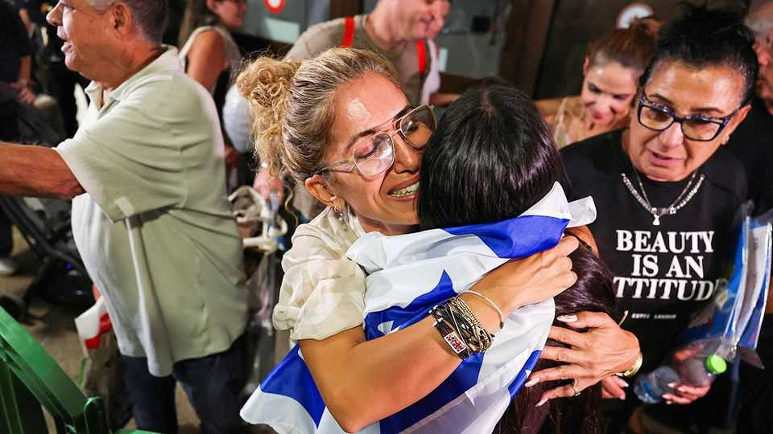
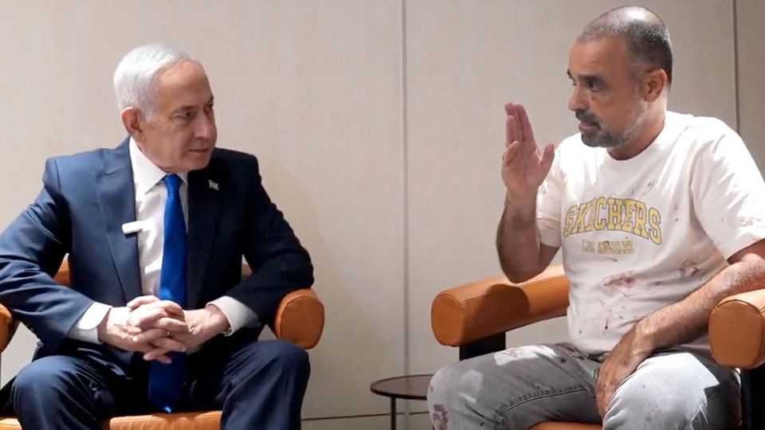

In a near-catastrophe, Binyamin Netanyahu sees an opportunity
Israel’s prime minister hopes to turn an electoral weakness into a strength

Oct 8th 2026
The margin between tragedy and deliverance could seldom have been as narrow as on September 30th, when Flydubai flight 1073 plummeted over 17,000 feet towards the desert in just two minutes. Had Captain Smit Machchhar not fought back long enough to open the cockpit door, after his Omani co-pilot, Hamam al-Hammami, attacked him with an axe; had the mother of six-year-old Nina Manes not had to take her to the toilet and heard the commotion; had passengers and crew not overpowered Mr Hammami and pulled the Boeing 737 out of its dive; had an off-duty pilot on board not landed the damaged plane. Had all of these not happened, some 180 crew and passengers, mostly Israelis, would have surely died on impact, perhaps killing many on the ground. Instead the plane made an emergency landing in Saudi Arabia and the passengers flew on to Tel Aviv, and a heroes’ welcome.
The distance between political triumph and fiasco is just as slim. Binyamin Netanyahu, Israel’s long-serving prime minister and always the showman, was on hand when they landed for a triumphant photograph and was filmed calling the pilot in hospital. He has, however, avoided difficult questions about the near-catastrophe. Why was an apparently radicalised pilot flying a plane to Tel Aviv? Why did the transport ministry, controlled by an ultra-loyal member of Mr Netanyahu’s Likud party, fail in its job of vetting air-crew flying to Israel? How did Israel’s intelligence and security services, which answer to the prime minister directly, miss this?
The prime minister’s office has offered no answers. But for Mr Netanyahu, the incident has offered a political opportunity. Rather than allow another security failure to reinforce the charges against him when it comes to the October 7th attacks on Israel by Hamas, Mr Netanyahu is trying to turn it to his advantage, campaigning once again as Israel’s indispensable protector.
The saga captures the central issue in Israel’s election. Mr Netanyahu’s unwillingness to grapple with the security lapses that led to the hijack attempt mirrors his refusal to take responsibility for such failures in the run-up to October 7th 2023. Yet he is campaigning on the issue where he is arguably most damaged: security.
His longstanding policy allowed Hamas, a militant Islamist group, to entrench and arm itself in Gaza. He ignored warnings from Israel’s security service and, so his opponents claim, from the Egyptian and Emirati governments, of an impending attack by Hamas. That helped create the conditions for the worst security debacle in Israel’s history. Mr Netanyahu denies there were any specific warnings and has blamed his security chiefs. They have all since resigned. The prime minister, who has just begun his 20th year in office, is fighting for yet another term.

Even before the Flydubai attack, Mr Netanyahu was warning voters of the dangers that await their country, dangers that only he has the experience and fortitude to confront. On September 29th he released a tough-talking video, standing in a fighter-jet hangar, claiming there were “signs that towards the election our enemies will try to attack us”. Security officials say that there were no specific imminent threats. But after the attempted hijacking (which did not appear on any official risk assessment), his proxies gloated that this was exactly what he had been talking about.
The opposition has accused the prime minister of trying to cause a public panic in an effort to win votes. He has reason. According to The Economist’s election tracker, Mr Netanyahu’s coalition of far-right and ultra-religious parties will fall short of a majority in the Knesset, Israel’s parliament. Most Israelis say they hold Mr Netanyahu responsible for the failures of October 7th. His opponents claim that they will find better ways to destroy Hamas, but offer no clear security or diplomatic strategy. And Mr Netanyahu talks tougher. He may lose the election but whoever rules will do so according to his agenda. ■